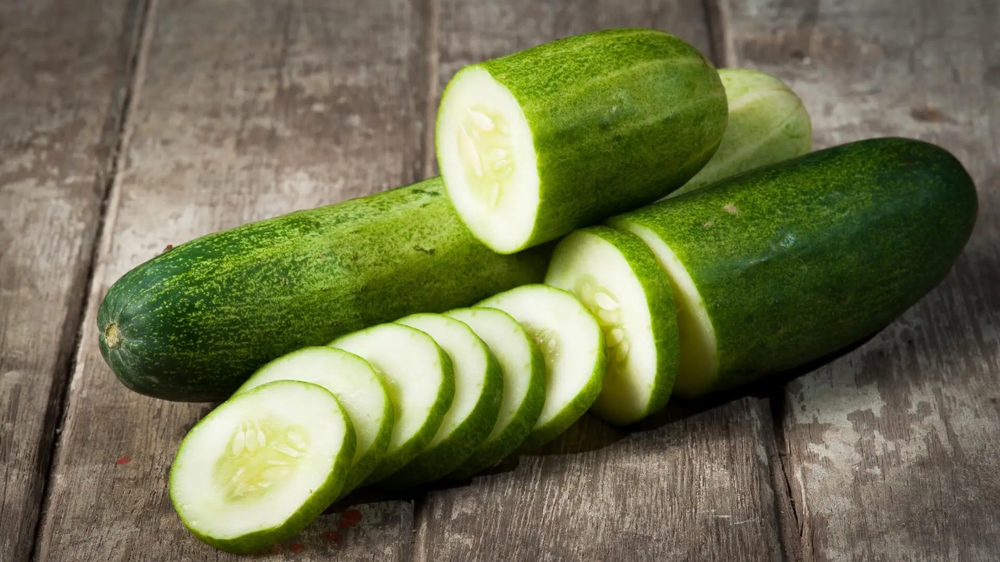

How to take care of your tomatoes ?

Tomato plants require regular watering and feeding to produce healthy fruits.
When watering tomato plants, the soil should be kept moist enough for moisture to reach the roots.
Refrain from overwatering as too much water can deprive the roots of oxygen.
How to take care of your cucumber
You can try to protect your cucurbits by building a floating row cover or similar barrier during early to mid-June to
keep the striped cucumber beetles away from your plants.
Be sure to remove the barrier when cucurbits start to flower.